From “Healthy” to Healthy
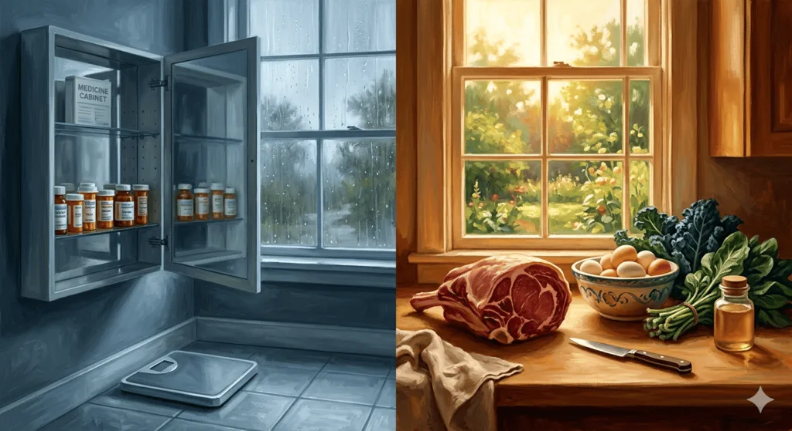
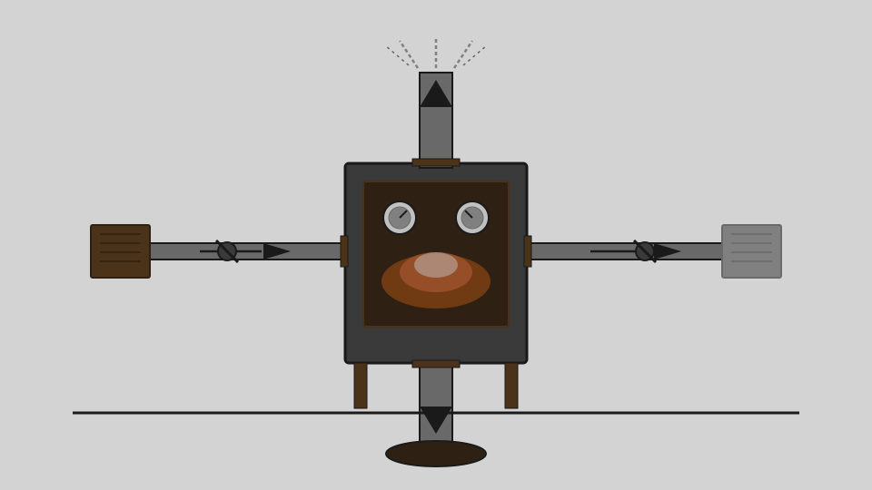
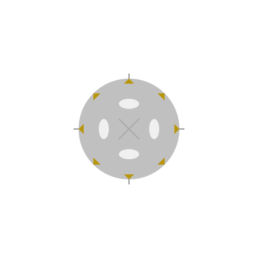
symbols, not pictures
Carátula (Spanish): the cover sheet — the first image you meet. Concepts go in, simple vector images in fundamental palettes come out — the lineage runs from the Voyager Golden Record through Picasso's line.
A profile is a visual grammar: a palette, an element budget, and a way of composing. Same concepts, different eyes.
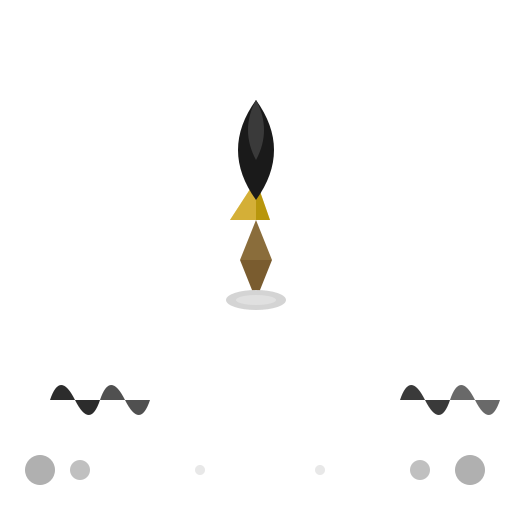
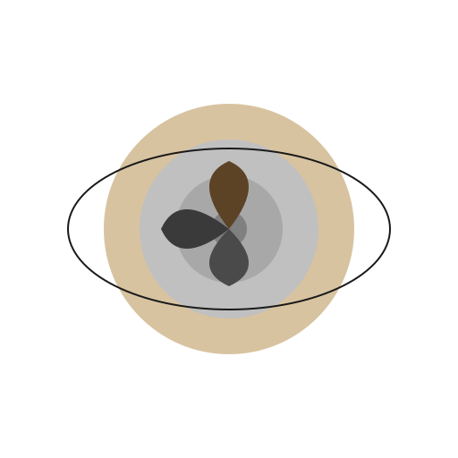
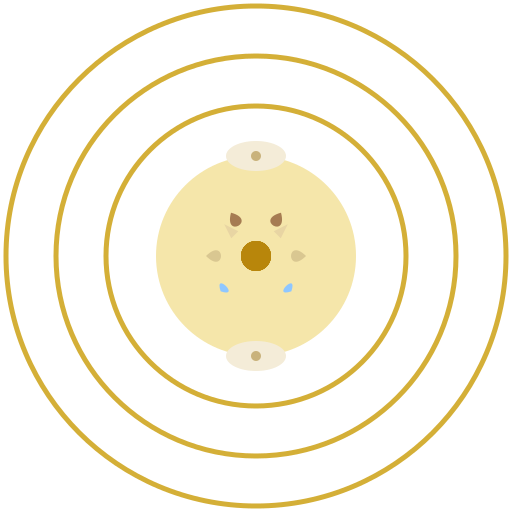
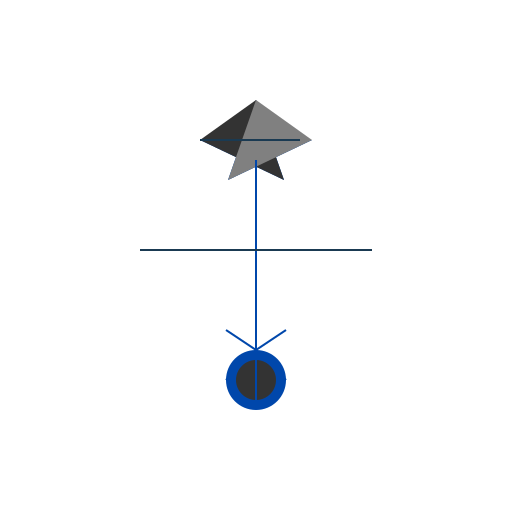
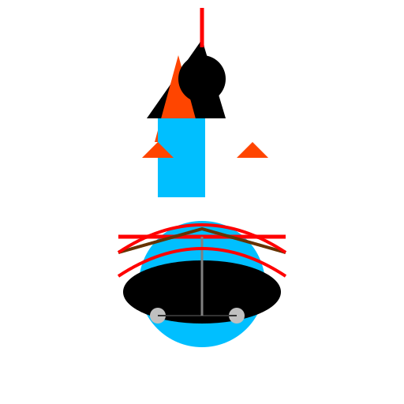
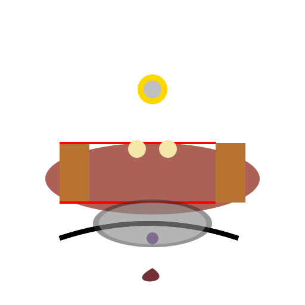
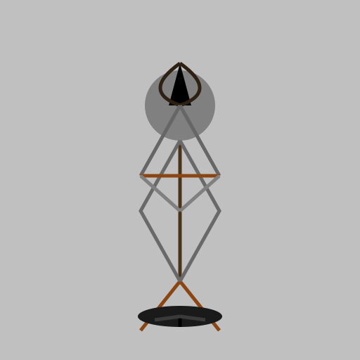
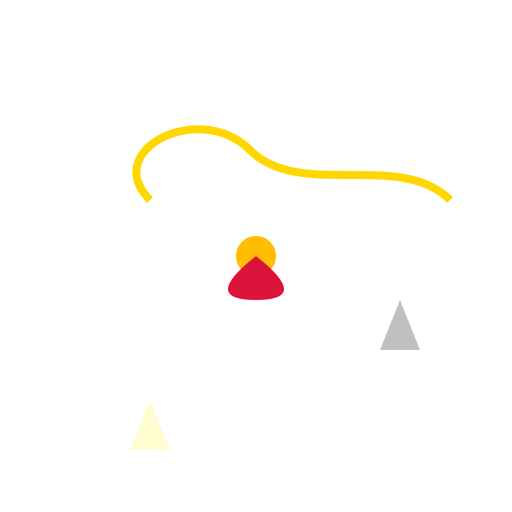
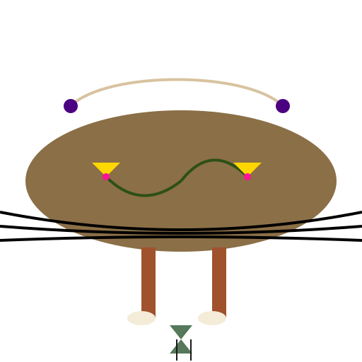
conten.to's post covers were technically fine but denotative — pictures of the subject, not symbols for it. caratulai reads the generated image with a vision model, extracts the concepts, and re-renders them as a symbolic SVG seal. These are the covers actually in use on conten.to today.


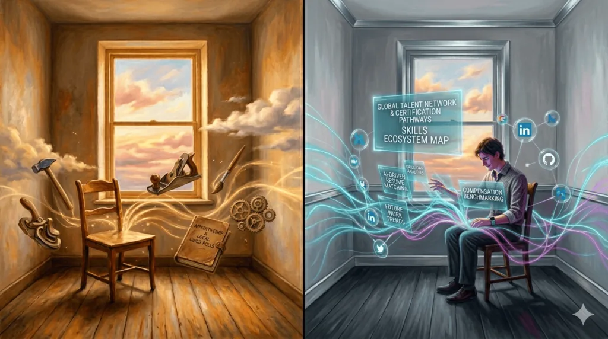
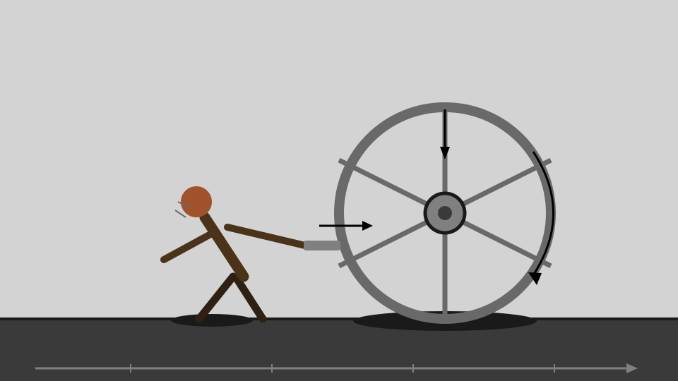
./caratulai.sh generate --from-image https://conten.to/images/post/healthy.png --profile rosinaRequires Node ≥ 20 and pnpm.
git clone https://github.com/contento/caratulai
cd caratulai
pnpm install && pnpm build
./caratulai.sh generate star water travel --profile sagan --out out/idea.svgTags, narrative text, URLs, or images in — an SVG seal in a fundamental palette out. See the README and wiki for the full profile list, providers, and configuration.